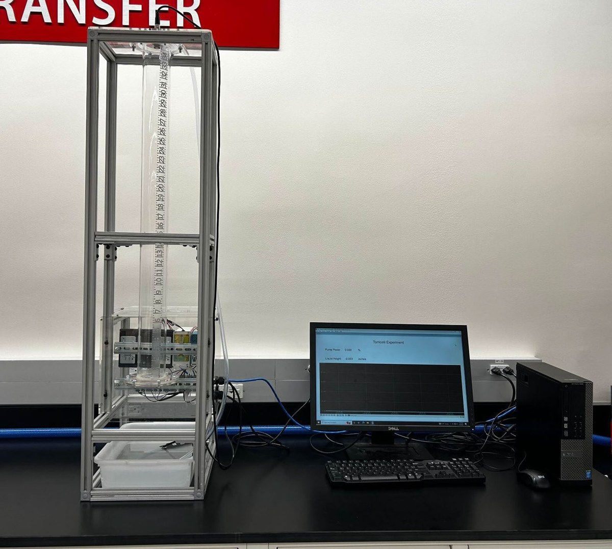

Fluid Mechanics · Experiment 1
Torricelli's Law: Draining a Column Through an Orifice
01 Introduction
Torricelli's law predicts that water leaving an orifice at depth h exits at v = √(2gh), the same speed as an object falling freely from that height. We test this by draining a water column through 1/8 in and 3/16 in orifices while an ultrasonic sensor tracks the falling water level in real time.

1Ultrasonic level sensor 2Acrylic column (inch scale) 3Power switch 4Orifice flange 5Pump (submerged) 6Water bucket 7Opto22 display- Ultrasonic level sensor
- Acrylic column
- Power switch
- Orifice flange
- Pump
- Water bucket
- Opto22 display
02 What we measured
The measured physical property is the liquid level (height, h) of water in the column, recorded against time. The ifm UGT507 ultrasonic sensor at the top of the column sends a 230 kHz pulse downward and times its echo off the water surface; the Opto22 system converts the sensor's 4–20 mA output into height above the orifice centerline. Exit velocities are derived from h(t) (see Data & Experiment).
The sensor measures the distance from its face to the water, so its range is a distance range. The column is about 34 in tall, so the 47.2 in maximum covers the whole column; the only restriction is the 3.15 in blind zone just below the sensor face (Table 1).
| Specification | Value |
|---|---|
| Sensing range (sensor face to water surface) | 3.15 in (min) to 47.2 in (max) (80–1200 mm) |
| Blind zone | 3.15 in |
| Linearity error of analog output | < 1 % |
| Hysteresis | < 1 % |
| Beam angle | 8° (±2°) |
| Output | 4–20 mA analog, temperature compensated; rated accuracy after a 20 min warm-up |
| Logging interval (Opto22 system) | about 1 s |
03 At a glance
Verdict: effective, with caveats. Torricelli's law described the 1/8 in orifice very well and the 3/16 in orifice reasonably well. Read the full assessment in the Conclusions.